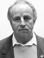

L'ICPA est une association privée créée par des amis et des collègues du journaliste Jack Lorski au lendemain de l'annonce de son meurtre en Écosse. Son seul but est d'aider les services de police et de justice internationaux à mettre fin le plus tôt possible aux agissements criminels du Phoenix.
SKL NETWORK est l'agence qui employait Jack Lorski. Elle a reçu et rendu public les deux CD-Roms envoyés par le Phoenix.
LIBERATION.FR a publié plusieurs articles sur l'affaire du Phoenix. Utilisez son moteur de recherches pour accéder à ses archives.
VICTIME N°3 : ABBÉ MALARD
- IDENTITÉ
L'abbé Malard est né à Fribourg, le 16 août 1942. Après des études secondaires au séminaire de Saint Joseph et des études de théologie, il a enseigné la religion, le latin, le grec et l'histoire à l'école catholique de Zurich. Il a occupé ensuite plusieurs postes importants : Directeur de l'Action Catholique de Neuchâtel, Curé de Montreux puis de Thoune, avant de diriger l'école de Brienz.
En rivalité avec les enseignements trop laxistes du scoutisme moderne, il a fondé sa propre communauté de loisirs en 1997 qui reprend textuellement la charte que rédigea Baden Powell en 1908 : L'Ordre des Éclaireurs. Son association, qualifiée de sectaire, est accusée d'utiliser des méthodes traumatisantes pour les enfants.
Il est l'auteur de l'ouvrage "Moines combattants au nom de Dieu" rétablissant la vérité historique sur le rôle des moines soldats.
Membre religieux de Manus Domini, il semble avoir occupé des fonctions importantes au sein de cette organisation.
- PHOTO

- DATE ET LIEU DU CRIME
En janvier 2002, le corps de l'abbé Malard est retrouvé au 2 rue de Candolle, près de l'entrée de l'Université de Genève. - AUTOPSIE
Le Phoenix l'a sequestré et torturé pendant une semaine, dans un châlet situé près des Rousses ; la cause de sa mort est un arrêt cardiaque, sans doute provoqué par ce traitement inhumain. Son front présentait une importante brûlure. - ANALYSE
L'abbé Malard est la troisième victime connue du Phoenix. Le tueur l'a d'abord choisi parce qu'il était membre de Manus Domini, condition sine qua non de sa vengeance contre cette société secrète ; de plus, connaissant les fonctions importantes de l'abbé Malard au sein de cette organisation, le Phoenix l'a certainement choisi pour lui soutirer des informations essentielles, notamment dans sa recherche du codex 14.
Afin de respecter son rituel lié au parcours européen de son maître à penser, Giordano Bruno, le Phoenix a également choisi l'abbé Malard parce qu'il était genevois. En effet, après s'être converti au calvinisme, Bruno s'inscrit à l'Université de Genève en qualité d'étudiant. Il suit les cours d'Antoine de La Faye, professeur de philosophie enseignant Aristote, dont il dénonce rapidement l'incompétence à travers un pamphlet. Entré une nouvelle fois en conflit avec la hiérarchie genevoise, Bruno est arrêté et excommunié le 6 août 1578.
Toujours en référence à son maître, le Phoenix a signé son crime en associant l'abbé Malard à Saturnus (Saturne), le deuxième principe élémentaire de la magie brunienne (De imaginum idearum compositione, 1591) : La peau brune, la barbe pendante, de longues touffes de cheveux dépassant de ses sourcils, il est ridé, ses yeux flamboient, il est sauvage, le regarder fait frémir. […] Dans sa main droite, il tient un bâton, dans la gauche une clé dorée, des oliviers et figuiers, de même qu'un sarment de vigne nanti de grappes. - COMMENTAIRES DU PHOENIX
• « Troisième sacrifié. Dans une main un bâton. Dans l'autre une clé et un rameau d'olivier. »
• « Torturé ? Non, je l'ai juste laissé sans manger quelques jours dans un châlet près des Rousses. » - DOCUMENT
• Article d'un journal suisse relatant la découverte du corps de l'abbé Malard
« La découverte du corps de l'abbé Malard met fin aux étranges rumeurs qui couraient depuis une semaine depuis sa disparition inexpliquée. La victime a été retrouvée cette nuit rue de Candolle près de l'entrée de l'Université. D'après des sources proches de la police, il s'agirait d'un assassinat. Sans préjugé des suites de l'enquête, il est certain que ce meurtre n'est pas prêt d'apaiser la polémique autour du personnage et de son association que certains par le passé n'ont pas hésité à qualifier de sectaire. »
- LIENS
• Site de l'Ordre des Éclaireurs de Saint-Paul de Genève
• Site personnel d'Alonzo Paoli